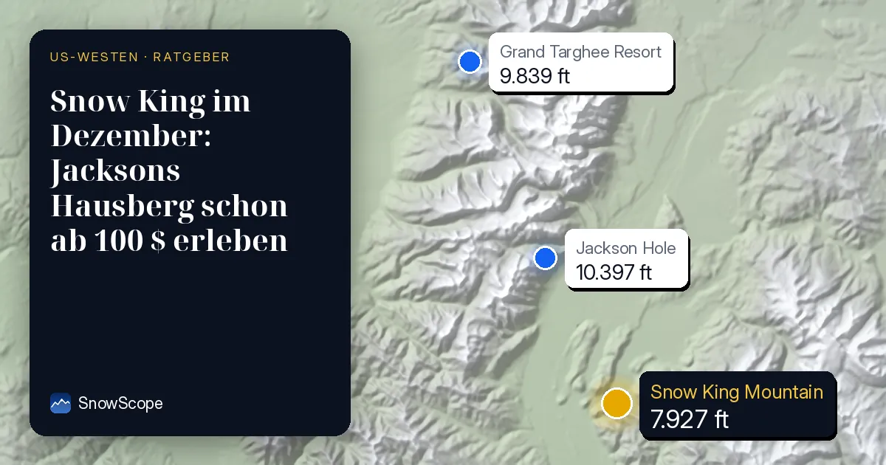

Snow King im Dezember: Jacksons Hausberg schon ab 100 $ erleben
Snow King ist Jacksons Alternative zu teuren Skigebieten: ein steiler Hausberg, den du zu Fuß erreichst, mit Tageskarten ab $100 und einer Schneedecke im Dezember, die zuverlässig über den Monat hinweg wächst. Bis zum 15. erreicht die Mittelhöhe meist 71 cm, der Gipfel hält noch mehr.
Die Live-Schneeprognose für Snow King Mountain in der SnowScope-AppSchneehöhen, Pulverschnee-Alarme und 3D-Karte, gratis.
Was du hier fährst
Snow King liegt am Rand der Innenstadt von Jackson und erhebt sich von 1.902 m auf 2.416 m. Das Skigebiet umfasst 9 Lifte und etwa 18 km Pisten. Der Berg ist steil und direkt, beliebt bei Einheimischen, die sich die Fahrt zu größeren Gebieten sparen wollen.

Schneehöhen im Dezember nach Höhenlage
Schnee kommt in der Mittelhöhe (2.159 m) in einem typischen Winter Mitte Oktober an. Am 1. Dezember hat die Mittelhöhe meist 49 cm. Zwei Wochen später, am 15. Dezember, springt die typische Höhe auf 71 cm. Am Weihnachtstag sind es 86 cm. Die Bergspitze (2.416 m) liegt höher: 87 cm am typischen 15. Dezember und 101 cm bis Weihnachten.
Die Talstation hinkt dagegen hinterher. Am 15. Dezember beträgt die typische Schneehöhe dort nur 54 cm, und in schwachen Jahren (eins von zehn) können es nur 35 cm sein. Steine können in der Frühjahrsaison an der Talstation sichtbar werden, also fahre wenn möglich höher.

Wie oft gibt es Schnee Mitte des Monats?
Am 15. Dezember hatten 87 % der Winter in unserem Datensatz mindestens 50 cm in der Mittelhöhe; 98 % am Gipfel. Selbst in einem schwachen Dezember hatte die Mittelhöhe durchschnittlich immer noch 49 cm. Die Chancen sind gut genug, um eine Reise danach zu planen.
Kosten und Pässe
Eine Tageskarte für Erwachsene (15–64 Jahre) kostet online ab $100. An vollen Tagen und Feiertagen ist es teurer. Snow King ist auch ein Indy Pass-Gebiet: Der Indy Base Pass kostet $419 für Erwachsene (zwei Tage in jedem von über 300 Gebieten mit Ausnahmestagen) und der Indy+ kostet $469 ohne Ausnahmestage.
Wenn du zwei Tage im Tal planst, könnte der Kauf eines einzelnen Indy+ Passes und die Auswahl von Snow King plus einem der größeren Gebiete in der Nähe günstiger sein als Tageskarten in jedem Gebiet.
Vergleich: Grand Targhee und Jackson Hole
Grand Targhee liegt jenseits des Teton Pass auf der Idahoer Seite. Am 15. Dezember hat es dort typischerweise 118 cm in der Mittelhöhe – deutlich mehr als Snow King. Jeden Winter in unserem Datensatz gab es dort am Stichtag mindestens 50 cm. Eine Tageskarte kostet dort je nach Datum $125 bis $180. Die Fahrt lohnt sich, wenn Schneehöhe wichtiger ist als Budget.
Jackson Hole Mountain Resort, oben im Tal, hatte am typischen 15. Dezember 93 cm in der Mittelhöhe. Snow King bleibt der billigste Einstieg ins Skifahren im Tal und die schnellste Anfahrt von der Stadt.
Der langfristige Trend
Früher Dezemberschnee in der Mittelhöhe ist mit der Zeit etwas dünner geworden. In den ersten 15 Wintern unseres Datensatzes (1980–81 bis 1994–95) betrug die typische Schneehöhe am 15. Dezember 88 cm und 100 % der Winter erreichten 50 cm oder mehr. In den letzten 15 Wintern (2011–12 bis 2025–26) lag die typische Höhe bei 69 cm und der Anteil über 50 cm fiel auf 80 %. Der vergangene Winter lieferte am 15. Dezember nur 44 cm, deutlich unter dem Median.
Tipps für Skifahrer
- Laufe vom Jackson-Platz zur Talstation und lass den Parkplatz links liegen; die Hausberg-Mentalität ist Teil des Reizes.
- Ziele in der Frühjahrsaison mid-mountain und darüber an; die Talstation ist dünn und könnte Steine zeigen.
- Kombiniere einen Snow King-Tag mit einem Tag in Grand Targhee für ein günstiges Wochenende an zwei Gebieten.
- Morgeneis ist auf nordseitigen Pisten im frühen Dezember häufig; plane deinen ersten Lauf so, dass du frisches Corduroy erwischst.
- Wenn ein Dezember-Trip feststeht, check den Indy Pass: zwei Tage in mid-tier-Gebieten kosten oft weniger als ein einzelner Tag im Peak-Season-Betrieb.
Zu diesen Zahlen
Die Schneehöhen der Skigebiete sind der meiste Schnee in den oberen Hängen am angegebenen Tag; es sind Schätzungen für eine Fläche, keine Messung an einem Punkt. Prognosen können sich ändern. Lies vor dem Freeriden immer den offiziellen Lawinenlagebericht.
Offizielle Lawinenlageberichte: Bridger-Teton Avalanche Center
Diesen Bericht zitieren
Für Forschung, Lehre oder Presse: Zahlen und Grafiken sind unter CC BY 4.0 mit dieser Quellenangabe frei nutzbar.
SnowScope (2026), Snow King im Dezember: Jacksons Hausberg schon ab 100 $ erleben, https://snowscope.app/blog/de/2026/11/snow-king-jackson-december-budget-skiing.html, abgerufen am 2026-11-14
SnowScope (Atlas Labs). (2026, November 14). Snow King im Dezember: Jacksons Hausberg schon ab 100 $ erleben. SnowScope snow reports. https://snowscope.app/blog/de/2026/11/snow-king-jackson-december-budget-skiing.html
BibTeX
@misc{snowscope2026snowkingjacksondecemberb,
author = {{SnowScope (Atlas Labs)}},
title = {Snow King im Dezember: Jacksons Hausberg schon ab 100 $ erleben},
year = {2026},
month = nov,
howpublished = {\url{https://snowscope.app/blog/de/2026/11/snow-king-jackson-december-budget-skiing.html}},
note = {Published 2026-11-14 19:27 UTC; accessed 2026-11-14}
}· CC BY 4.0 · Methoden, Daten und Werkzeuge →
Snow King Mountain: Schnee und Temperatur nach Höhe, dieser Winter vs letzter (Werkzeuge) →
Snow King Mountain folgen
Gratis: eine Nachricht, wenn Neuschnee kommt, und jeden Morgen die Vorhersage.